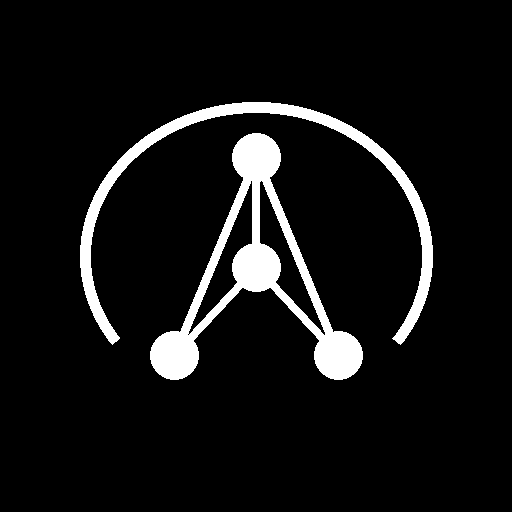

Project Aura is a monolithic 100% offline, air-gapped support workstation designed to perform ticket triaging, automated macro categorization, and technical document curation directly on secure local systems.
A single Python process executes the entire UI and offline models, bypassing Inter-Process Communication (IPC) overhead to maximize CPU throughput.
/.chromadb.Engineering decisions were centered on mitigating constraints of offline workstation deployment environments.
None value inputs. Ingested Word documents (which contain no page numbers) omit the page_number key completely rather than passing a null reference, preventing index crashes.
Four core workstations partition system capabilities to match secure IT operator tasks:
A robust, encoding-resilient data ingestion pipeline processes support CSV inputs to feed the local vector store.
close_notes to standard schema column closed_note.DD-MM-YYYY HH:MM:SS AM/PM and ISO/MySQL standard YYYY-MM-DD HH:MM:SS.Aura triages queries by matching incident patterns in vectorized documentation libraries before prompting GGUF models.
A parent-child telemetry architecture logs transaction flows across threads to audit model performance without remote telemetry sinks.
| Event Name | Duration | Status |
|---|---|---|
| ▼ incident_ingestion | 24,510 ms | SUCCESS |
| └─ single_incident_vectorization (INC001) | 180 ms | SUCCESS |
| └─ single_incident_vectorization (INC002) | 195 ms | SUCCESS |
| ▶ rag_query | 4,105 ms | SUCCESS |